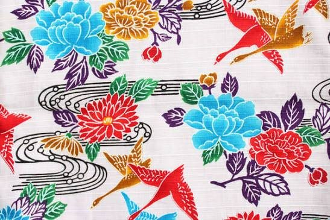
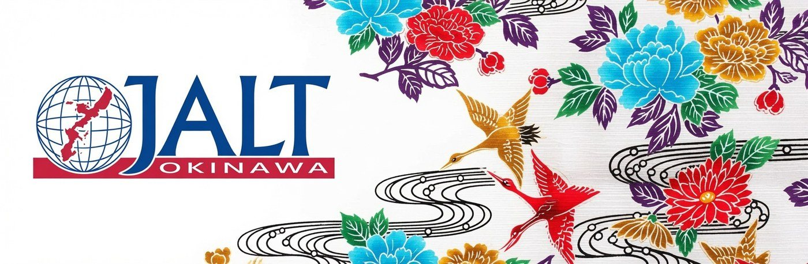
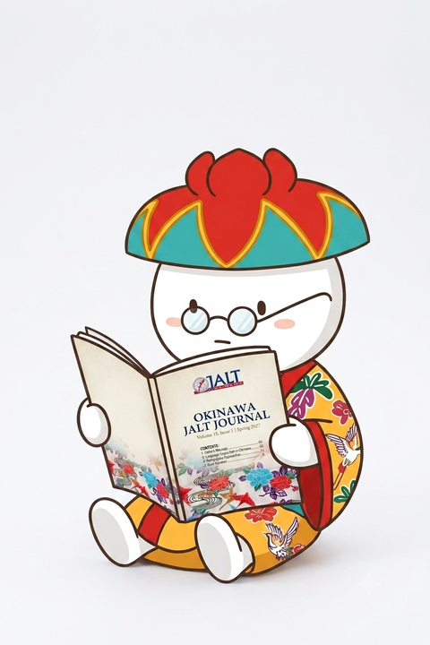
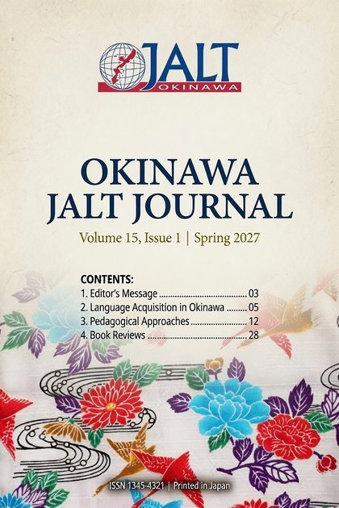

Share Your Scholarship with Okinawa and Beyond
The Okinawa JALT Journal invites language education professionals, classroom teachers, and students to submit original work for peer-reviewed publication.

A New Chapter in Okinawa Language Education
The peer-reviewed annual publication of the Okinawa Chapter of the Japan Association for Language Teaching (JALT)
1×
issue per year
365
days open for submissions
APA 7
citation format
2-blind
peer review
The Okinawa JALT Journal publishes original research and reflective practice from language educators in Okinawa, across Japan, and beyond. Whether you are an experienced researcher or sharing your classroom practice for the first time, the journal offers a supported, rigorous pathway to publication, and an invitation to be part of something new.
— Editorial Mission
Editor-in-Chief: Brian Gallagher

Article Types & Word Counts
We accept five types of submissions. Choose the category that best fits your work. All types undergo peer review and carry equal scholarly standing upon publication.
Academic Research Article
Original empirical or theoretical research following a structured methodology. Contributes directly to the scholarly literature on language education.
Practice-Based Article
Classroom experiences, lesson design, program descriptions, or professional reflection. Equally valued alongside research articles.
Student Section Submission
For current undergraduate/graduate students and recent graduates (within 1 year). Developmental peer review with formative feedback for all submissions.
Proceedings Section
For presenters at Okinawa JALT conferences. Submissions arising directly from a conference presentation are given special consideration by the editorial team. Any of the above article formats is accepted.
Book Review
A critical review of a recently published work in language education, applied linguistics, or TESOL. No abstract required.
How to Submit in 4 Simple Steps
1 · Prepare your manuscript
Write in English, double-spaced, 12pt Times New Roman, 1-inch margins. Remove all author-identifying information for blind review. Save as a .docx file.
2 · Create a title page
In a second .docx file, include your name, affiliation, email, article type, word count, and a short bio (50–100 words). This file goes to editors only, not reviewers.
3 · Complete the form
Fill in the short online form and upload both files. The whole process takes about 5 minutes.
4 · Receive acknowledgment
You will receive confirmation within 5 business days. The full peer review process takes approximately 6–10 weeks.
Complete Author Guidelines
Everything you need to know before submitting. Please read these guidelines carefully: submissions that do not meet these requirements may be returned before peer review.
📖 Scope & Purpose
The Okinawa JALT Journal publishes original work in English relevant to language education, with particular focus on contexts in Okinawa and Japan. The journal welcomes contributions from teachers, researchers, graduate students, and emerging scholars at any career stage.
Topics of interest include, but are not limited to:
- English language teaching (ELT) in Japanese contexts
- Second language acquisition (SLA) research
- Task-based language teaching (TBLT)
- Curriculum and materials development
- Technology in language education (CALL/MALL)
- Content and language integrated learning (CLIL)
- Assessment and testing in EFL/ESL settings
- Learner motivation, autonomy, and identity
- Teacher training and professional development
- Intercultural communication and education
- Extensive reading and vocabulary acquisition
- Reflective practice and action research
📄 Article Types & Structures
Choose the article type that best matches your work. All types undergo peer review and carry equal scholarly standing upon publication.
Academic Research Article · 3,000–5,000 words
Presents original empirical or theoretical research following a recognized methodology. Suitable for quantitative, qualitative, or mixed-methods studies, as well as theoretical papers. Required structure:
- Introduction: background, rationale, and research questions or objectives
- Literature Review: critical synthesis of relevant prior research (not a simple summary)
- Methodology: participants, instruments, data collection procedures, and analysis approach
- Results / Findings: data presented clearly with tables or figures where appropriate
- Discussion: interpretation of findings, connection to literature, limitations
- Conclusion: summary, pedagogical implications, and directions for future research
- References: APA 7th Edition; minimum 10 peer-reviewed sources recommended
“How does corrective feedback type affect written accuracy in EFL university writing classes in Okinawa?”
“What motivational factors predict English learning persistence among adult learners in rural Japan?”
Practice-Based Article · 2,000–4,000 words
Describes, analyzes, and reflects on language teaching practice, lesson or unit design, program development, or professional experience. These are equally valued alongside research articles and are especially encouraged from classroom teachers. Recommended structure:
- Introduction: context and purpose of the article
- Context & Setting: the teaching environment, learners, and goals
- Description of Practice: what was done, how it was designed, and why
- Outcomes & Reflection: what worked, what did not, student response, evidence of impact
- Conclusion: key takeaways and recommendations for other practitioners
- References: APA 7th Edition; sources as appropriate
“Using Collaborative Digital Storytelling to Build Oral Fluency in a Junior High EFL Classroom”
“Integrating Extensive Reading into a University General English Course: A One-Year Reflection”
Student Section Submission · 1,500–3,000 words
For current undergraduate or graduate students, and recent graduates within one year of submission. The Student Section uses a developmental peer review model: all submissions receive detailed, constructive written feedback regardless of the editorial outcome. A faculty supervisor or mentor name is required on the title page. Eligible submissions include:
- Research papers based on coursework, seminar papers, or thesis chapters (significantly developed beyond the original)
- Small-scale classroom research or action research projects
- Literature reviews or theoretical explorations of a focused topic
- Reflective essays on teaching practice or language learning experience
- Teacher training practicum reports
“A Comparative Review of Corrective Feedback Strategies in the SLA Literature”
“Reflecting on My First Year of Teaching: Identity, Challenges, and Growth in an Okinawan Junior High School”
Co-authored submissions with a faculty mentor are welcome, provided the student is listed as first author. Accepted student authors receive an official Certificate of Publication from the Okinawa JALT Journal.
Proceedings Section Submission · any of the above lengths
For presenters at Okinawa JALT conferences. Proceedings submissions are given special consideration by the editorial team in recognition of the scholarly work already demonstrated at the event. The submission window is open for 3 months following the close of each conference.
You may submit in any of the article formats above. The manuscript should expand meaningfully upon your conference presentation, not simply reproduce your slides or handout, but develop the ideas, methodology, or reflection further for a reading audience. Include the conference name, date, and original presentation title on your title page.
Book Review · 500–1,000 words
A critical review of a recently published (within the last 3 years) book in language education, applied linguistics, TESOL, or a closely related field. No abstract is required. Reviews should provide a fair summary of the work and offer a critical evaluation of its contribution, strengths, and limitations. Include at the top of your review (in APA format):
📐 Manuscript Formatting
All manuscripts must be submitted as a Microsoft Word (.docx) file. The following formatting is required throughout, including the reference list.
| File | .docx only (Microsoft Word). PDF submissions are not accepted. |
|---|---|
| Font | Times New Roman, 12-point throughout (body text, headings, references, captions) |
| Line spacing | Double-spaced throughout, including the reference list and block quotations |
| Margins | 1 inch (2.54 cm) on all four sides |
| Page numbers | Every page, placed in the header or footer |
| Paragraph indent | 0.5 inch indent for the first line of each paragraph (no extra space between paragraphs) |
| Headings | APA 7th Edition heading levels (see below) |
| Tables | Numbered sequentially (Table 1, Table 2…), titled above the table, and referenced in text |
| Figures | Numbered sequentially (Figure 1, Figure 2…), captioned below the figure, and referenced in text |
| Appendices | Labeled Appendix A, Appendix B…; appear after the reference list |
APA Heading Levels
| Level 1 | Centered, Bold, Title Case: major sections (Literature Review, Methodology, Results, Discussion, Conclusion) |
|---|---|
| Level 2 | Flush Left, Bold, Title Case: subsections within major sections |
| Level 3 | Flush Left, Bold Italic, Title Case: subsections within Level 2 |
| Level 4 | Indented, Bold, Title Case, Ends With a Period. Text continues on the same line. Used rarely, for detailed subcategories. |
🔒 Preparing for Blind Review
All manuscripts undergo double-blind peer review. Neither authors nor reviewers know each other's identities. Before uploading, you must remove all identifying information from your manuscript file.
- Your name and institutional affiliation
- Acknowledgments section
- Self-citations with your name (replace with [Author, Year])
- References to your own unpublished work by name
- Any footnotes or headers containing identifying details
- Word document metadata (author name in file properties)
- Full manuscript title
- Abstract and keywords
- All body text, headings, and sections
- Tables, figures, and appendices
- Complete reference list in APA 7th
- Page numbers on every page
Anonymizing self-citations
📝 Abstracts & Keywords
| Academic Article | 150–250 words |
|---|---|
| Practice-Based Article | 100–200 words |
| Student Section | 100–150 words |
| Book Review | No abstract required |
Every abstract must be self-contained: a reader should understand the full article from the abstract alone. Do not cite sources within the abstract. Include:
- Purpose/aim: what the study or article set out to do and why
- Approach or methodology: how the work was conducted or structured
- Key findings or outcomes: what was discovered, learned, or recommended
- Implications: what this means for teachers, researchers, or the field
Sample abstract · Practice-Based Article (152 words)
Keywords
List 3–8 keywords on a new line directly below the abstract, introduced with the label Keywords: in italics. Separate with semicolons. Choose terms that reflect your topic, methodology, context, and learner population.
📚 APA 7th Edition: Reference Guide
All manuscripts must follow APA 7th Edition (published 2020). Key changes from APA 6th include “et al.” from the first citation for 3+ authors, updated DOI format, and revised heading levels. The authoritative resource is apastyle.apa.org.
In-Text Citations
| 1 author | (Smith, 2022) or Smith (2022) found that… |
|---|---|
| 2 authors | (Smith & Jones, 2022) or Smith and Jones (2022) argue… |
| 3+ authors | (Smith et al., 2022): use “et al.” from the very first citation |
| Direct quote | (Smith, 2022, p. 45): always include the page number for direct quotes |
| Block quote | Quotations of 40+ words: indent 0.5 in., no quotation marks, period before the citation (Smith, 2022, p. 67) |
| Multiple works | List alphabetically, separated by semicolons: (Jones, 2019; Smith, 2022) |
| No author | Use the first few words of the title in quotation marks: (“Language Learning,” 2021) |
Reference List Formatting
- Alphabetical by first author's surname
- Double-spaced throughout with a 0.5-inch hanging indent
- Include a DOI for all journal articles where available, in the format https://doi.org/xxxxx
- Do not include retrieval dates for stable online sources
- All authors listed (up to 20); for 21+ authors, list the first 19, then an ellipsis, then the final author
Reference Examples
⚖️ Ethics & Publication Policies
Originality & Simultaneous Submission
Submissions must be original, unpublished work not currently under review at any other journal or publication. Submitting the same manuscript to multiple journals simultaneously is not permitted. Self-plagiarism (reusing substantial portions of your own previously published text without disclosure) must be declared.
Human Participants & Consent
Research involving human participants, including classroom observations, surveys, interviews, or the use of student work, must have received appropriate ethical clearance. Authors confirm that participants provided informed consent. Documentation must be available to editors upon request. Student data must be anonymized in the manuscript.
Authorship
All listed authors must have made a substantive intellectual contribution to the work. The corresponding author confirms all co-authors have read and approved the final manuscript. AI tools may not be listed as authors.
AI Writing Tools
Authors who used AI tools (e.g., ChatGPT, Claude, Grammarly) in drafting or editing must disclose this in a brief note at the end of the manuscript, before the reference list. Describe what tool was used and how. AI-generated text must be reviewed and verified by the author.
Copyright & Licensing
Authors retain copyright of their published work. The Okinawa JALT Journal is granted a non-exclusive license to publish and distribute the article. Authors may post accepted manuscripts to personal or institutional repositories.
COPE Guidelines
The journal follows the Committee on Publication Ethics (COPE) Code of Conduct for editors, reviewers, and authors. Allegations of misconduct, including plagiarism, data fabrication, or undisclosed conflicts of interest, are taken seriously and investigated accordingly.
📋 Title Page Requirements
The title page is a separate .docx file from your manuscript. It is seen by editors only and is never shared with peer reviewers. It must include all of the following:
- Full manuscript title
- Author name(s) and institutional affiliation(s) for all authors
- Corresponding author email address
- ORCID iD (optional but encouraged; register free at orcid.org)
- Article type: Academic Research Article | Practice-Based Article | Student Section | Proceedings Section | Book Review
- Word count (body text only; exclude abstract, references, and appendices)
- Short author bio (50–100 words per author; used in publication if accepted)
- Confirmation that the manuscript is not under review elsewhere
- Ethics confirmation: ethical approval or informed consent obtained (or not applicable)
- Student Section only: faculty supervisor/mentor name and email
- Proceedings Section only: conference name, date, and original presentation title
- AI disclosure (if applicable): tools used and nature of use
Sample entries
Word Count: 3,247 (body text only)
Conference (if Proceedings): Okinawa JALT Annual Conference, November 2026, “Using Photovoice in EFL Composition Classes”
📬 After You Submit
| Acknowledgment | You will receive confirmation of receipt within 5 business days |
|---|---|
| Desk review | Editors check scope, completeness, and formatting, within 2 weeks |
| Peer review | If accepted for review, your manuscript is sent to 2–3 reviewers; takes 6–8 weeks |
| Decision | Issued within 10 weeks of submission. Possible decisions: Accept · Accept with Minor Revisions · Revise and Resubmit · Decline |
| Revisions | Authors are given 4–6 weeks to complete requested revisions |
| Final acceptance | Within 2 weeks of resubmission, the editor issues a final decision |
| Copyediting | Accepted manuscripts enter copyediting and layout; authors may be contacted for minor corrections |
| Publication | Annual issue; the inaugural issue is planned for early 2027 |
Pre-Submission Checklist
Confirm each item before uploading. Incomplete submissions may be returned.
- My manuscript is within the required word count for my article type
- My abstract meets the required length and covers purpose, approach, findings, and implications
- Keywords are listed below the abstract, separated by semicolons
- All author-identifying information has been removed from my manuscript file
- APA 7th Edition used throughout: in-text citations and the reference list
- DOIs included for all journal references where available
- Tables and figures are numbered, titled, and cited in the text
- File saved as Microsoft Word (.docx)
- A separate title page document has been prepared with my author details
- Ethical approval or informed consent confirmed (if research involves human participants)
- Manuscript is not currently under review at any other publication
- If Student Section: faculty supervisor name is on my title page
- If Proceedings Section: conference name, date, and original presentation title noted
Annual Calendar
Submissions are accepted year-round. The inaugural issue is planned for early 2027.
- NowSubmissions open year-roundRolling desk review and peer review
- After acceptanceRevisions, copyediting & layout
- Early 2027Inaugural issue published
The inaugural issue is planned for early 2027. Questions about timing? Contact the editorial team.
The Peer Review Process
All manuscripts undergo double-blind peer review. The Student Section uses a developmental review model with detailed written feedback provided regardless of decision.
| Desk review | Editors check scope, completeness, and formatting, within 2 weeks of submission |
|---|---|
| Reviewer assignment | 2–3 reviewers selected from the Editorial Board within 3 weeks |
| Peer review period | 6–8 weeks |
| Decision issued | Within 10 weeks of submission |
| Possible decisions | Accept as submitted · Accept with minor revisions · Revise and resubmit · Decline |
| Revision period | Authors are given 4–6 weeks for revisions |
| Student Section | All declined student submissions receive detailed written guidance for future resubmission |
Frequently Asked Questions
Can I submit if I am not an Okinawa JALT member?
Yes. The journal is open to all language education professionals, researchers, and students regardless of JALT membership. We do, however, encourage contributors to join and engage with the Okinawa JALT community.
Can I submit work I presented at an Okinawa JALT conference?
Absolutely. This is one of our most valued submission pathways. Conference presenters are warmly invited to submit an expanded version of their presentation to the Proceedings Section within 3 months following the conference. Proceedings submissions are given special consideration by the editorial team in recognition of the scholarly work already demonstrated at the event. All submissions still undergo peer review to ensure quality and rigor.
I am a student. Can I submit on my own without a faculty supervisor?
Solo student submissions are welcome. However, we do ask that a faculty supervisor or mentor name be included on the title page. This person does not need to be a co-author, but should be aware of and supportive of the submission. Co-authored submissions with a faculty member are also accepted, provided the student is the first author.
What does “remove identifying information” mean exactly?
Your manuscript file (the main document sent to reviewers) should not contain your name, institutional affiliation, or acknowledgments. Self-citations should be anonymized (e.g., write “[Author, 2022]” in place of your name). You should also remove author metadata from the Word file properties (File → Info → Check for Issues → Inspect Document). Your author information goes on the separate title page, which is seen only by editors.
Can I submit in Japanese?
The primary language of the journal is English. However, we warmly encourage authors to include a Japanese-language abstract alongside the English abstract. This helps reach a wider readership within the Japanese JALT community.
How long will the review process take?
The full process from submission to decision takes approximately 6–10 weeks. You will receive an acknowledgment of receipt within 5 business days of submission, followed by a desk review within 2 weeks. If your manuscript advances to peer review, the review period is approximately 6–8 weeks.
What happens if my manuscript is declined?
You will receive the reviewers' feedback in all cases. For Student Section submissions, detailed developmental feedback is always provided. You are encouraged to revise and resubmit in a future issue; a prior decline is not a barrier to future consideration.
Do I need to use a specific version of APA?
Yes. Please use APA 7th Edition (the current edition, published 2020). Key changes from APA 6th include use of “et al.” from the first citation when there are 3+ authors, updated DOI formatting, and revised heading levels. The official resource is apastyle.apa.org.

Inaugural Issue · Early 2027
Ready to Submit?
Join the scholars, teachers, and students who are helping launch a new chapter in Okinawa JALT's history. The submission form takes less than 5 minutes to complete.
Submit Your Article →Questions? okijalt@gmail.com